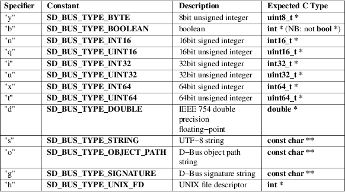

sd_bus_message_read_basic − Read a basic type from a message
#include <systemd/sd−bus.h>
|
int sd_bus_message_read_basic(sd_bus_message *m, char type, void *p); |
sd_bus_message_read_basic() reads a basic type from a message and advances the read position in the message. The set of basic types and their ascii codes passed in type are described in the D−Bus Specification [1] .
If p is not NULL, it should contain a pointer to an appropriate object. For example, if type is 'y', the object passed in p should have type uint8_t *. If type is 's', the object passed in p should have type const char **. Note that, if the basic type is a pointer (e.g., const char * in the case of a string), the pointer is only borrowed and the contents must be copied if they are to be used after the end of the message's lifetime. Similarly, during the lifetime of such a pointer, the message must not be modified. If type is 'h' (UNIX file descriptor), the descriptor is not duplicated by this call and the returned descriptor remains in possession of the message object, and needs to be duplicated by the caller in order to keep an open reference to it after the message object is freed (for example by calling "fcntl(fd, FD_DUPFD_CLOEXEC, 3)"). See the table below for a complete list of allowed types.
Table 1. Item type specifiers

If there is no object of the specified type at the current position in the message, an error is returned.
On success, sd_bus_message_read_basic() returns a positive integer. If the end of the currently opened array has been reached, it returns 0. On failure, it returns a negative errno−style error code.
Errors
Returned errors may indicate the following
problems:
−EINVAL
Specified type string is invalid or the message parameter is NULL.
−ENXIO
The message does not contain the specified type at current position.
−EBADMSG
The message cannot be parsed.
systemd(1), sd-bus(3), sd_bus_message_append_basic(3), sd_bus_message_skip(3), sd_bus_message_read(3)
|
1. |
D-Bus Specification |
https://dbus.freedesktop.org/doc/dbus-specification.html